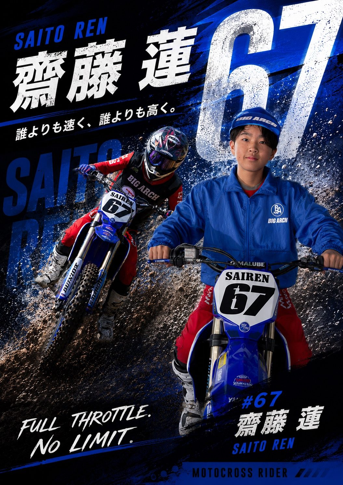
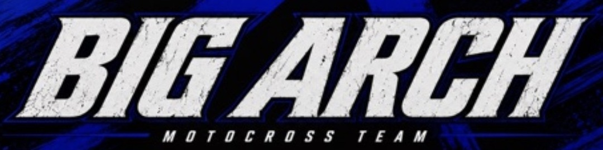
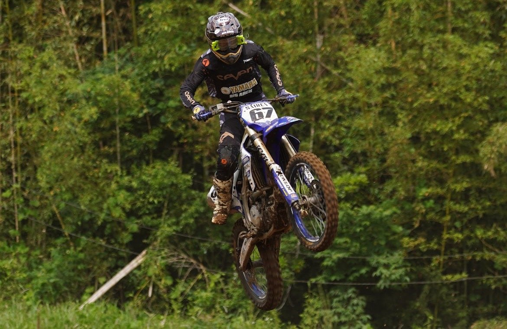
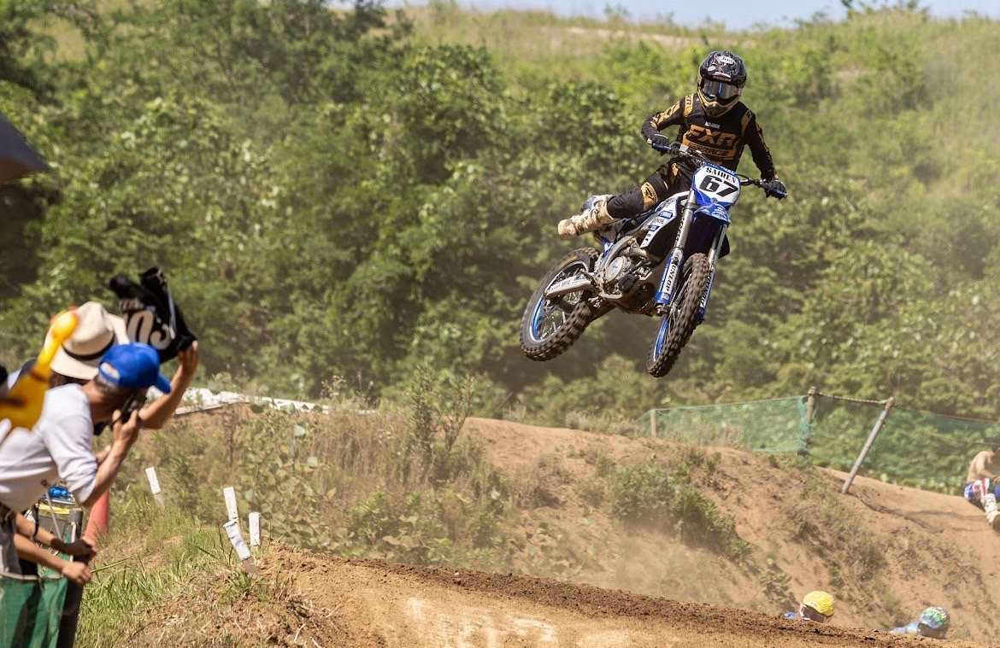

RIDER 01
REN SAITO
2027 / NATIONAL A • YAMAHA YZ250F
2025年は大きな怪我により一部大会を辞退。家族でトレーニングや練習方法、レース前のタイヤ・車両セッティングを見直し、2026年の関東モトクロス選手権NBクラスでシリーズランキング1位を獲得しました。
2026 KANTO NB SERIES CHAMPION


BIG ARCHは、モトクロスに挑戦する齋藤蓮・琉生と、チーム監督 齋藤真也の競技経験をつなぐチームです。過去の記録を大切に保管し、次の世代へ伝えていきます。

2027 / NATIONAL A • YAMAHA YZ250F
2025年は大きな怪我により一部大会を辞退。家族でトレーニングや練習方法、レース前のタイヤ・車両セッティングを見直し、2026年の関東モトクロス選手権NBクラスでシリーズランキング1位を獲得しました。
2026 KANTO NB SERIES CHAMPION

2027 / JUNIOR CROSS • YAMAHA YZ85 • #16
2026年の関東モトクロス選手権K65クラスで年間ランキング5位。2027年はYZ85でジュニアクロスへ挑戦します。掲載ポスターは過去の車両・ゼッケンで撮影されたものです。
2027 NEW CLASS CHALLENGE
年間ランキング記録。大会ごとのヒート順位は、今後原本を確認して追加します。
| YEAR | RIDER | CLASS | RANK | POINTS |
|---|---|---|---|---|
| 2025 | 齋藤 蓮 | JX | 22位 | 80 |
| 2025 | 齋藤 蓮 | OPEN 85 | 9位 | 110 |
| 2026 | 齋藤 蓮 | NB | 1位 ★ | 463 |
| 2025 | 齋藤 琉生 | K65 | 16位 | 118 |
| 2026 | 齋藤 琉生 | K65 | 5位 | 353 |
出典：MFJ関東モトクロス選手権 年間ランキング（2025・2026）／個別の大会結果は追加確認予定
TEAM DIRECTOR / FORMER INTERNATIONAL A RIDER
カワサキTEAM GREENでの活動を経て、ヤマハ土浦レーシングに所属した元国際A級ライダー。自身の競技経験をもとに、現在は次世代ライダーの育成とチーム活動を支えています。
2000年には全日本モトクロス選手権IA125クラスでも活躍。MFJ公式記録には「斉藤 真也」、ゼッケン23、所属「茨城土浦レーシングクラブ」として、YAMAHA YZでレースに挑んだ足跡が残されています。

MFJ公式：2000年 全日本モトクロス選手権リザルト（PDF） ↗
1988年からのレース活動、TEAM TORAO時代の戦績、当時の雑誌掲載や貴重な写真は、歴史ページで紹介しています。
真也のレーシングヒストリーを見る ↗
過去の大会リザルト、雑誌掲載記録、写真を年代順に整理し、長期保存するためのアーカイブです。
1997年 IB250 年間6位（TEAM TORAO）／2000年 IA125 年間19位／2001年 IA250 年間23位。MFJの公式記録をもとに掲載しています。
公式PDFを開く ↗
ストリートカルチャー誌『Ollie』などに掲載された真也の取材記録を紹介。
雑誌掲載アーカイブを見る ↗
監督の現役時代の走行写真やサイン入り資料を紹介。
フォトギャラリーを見る ↗
BIG ARCHが注目するモトクロスギア。各ブランドの公式サイトで製品をご覧いただけます。


海外発の注目アイウェアブランド、FlowVision！大胆でおしゃれなカラーリングと、個性が光るデザインが魅力。モトクロスゴーグルだけでなく、サングラスなどのアイテムも展開。走りもファッションも楽しみたいライダーにおすすめのブランドです！
※ブランド名の表示はBIG ARCH独自の文字デザインです。公式ロゴ・商品写真は権利者から掲載許可を得た画像を設定してください。
レース活動や練習風景はSNSでも発信しています。